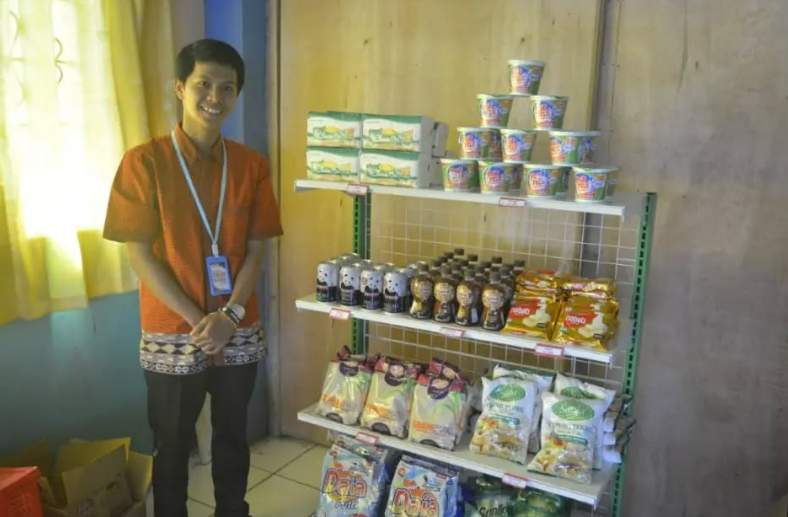

Gedung & Infrastruktur
- Gedung milik sendiri dengan letak strategis di pinggir Jalan Raya Puncak
- Gedung 2 dengan nuansa alami
- Ruang Serbaguna
Fasilitas Teknologi
- Laboratorium Komputer Windows 10 dengan LCD Monitor
- Digital Projector + wireless display untuk belajar di kelas
- Local Area Network & Internet Fiber 500 Mbps
- Lab Bahasa Digital + Plasma 42 inch
- LED Monitor 65 inci dan 55 inci setiap kelas
- Wi-Fi Free Internet Hotspot satu kelas satu perangkat

Laboratorium Jurusan
- Lab.K.K. Pariwisata (Mini Travel Agent)
- Lab.K.K. Administrasi Perkantoran (Mini Office)
- Lab.K.K. Pemasaran (Mini Mart)

Fasilitas Ibadah
- Musholla Putra
- Musholla Putri

Fasilitas Olahraga
- Lapangan Serbaguna Futsal, Basket, Volley, Badminton
- Tenis Meja

Fasilitas Penunjang
- Ruangan Lab. menggunakan Air Conditioner (AC)
- Perpustakaan dan e-Library